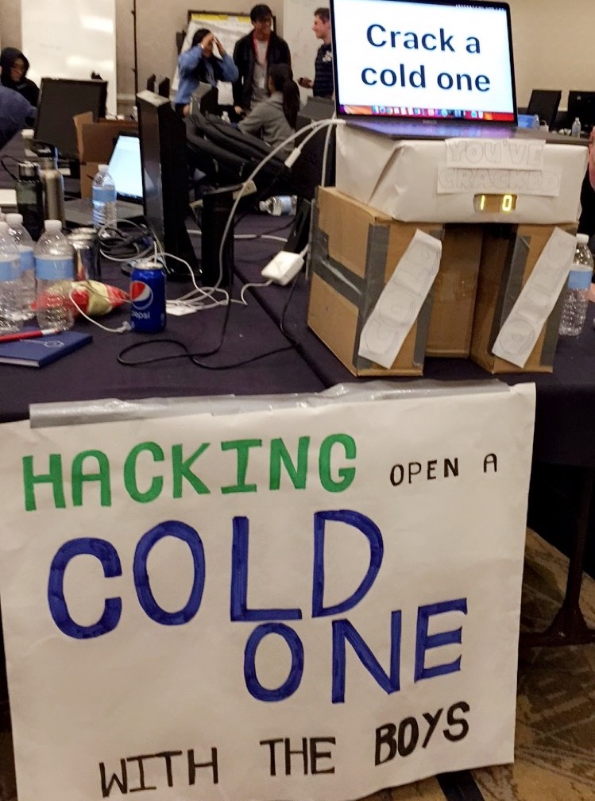
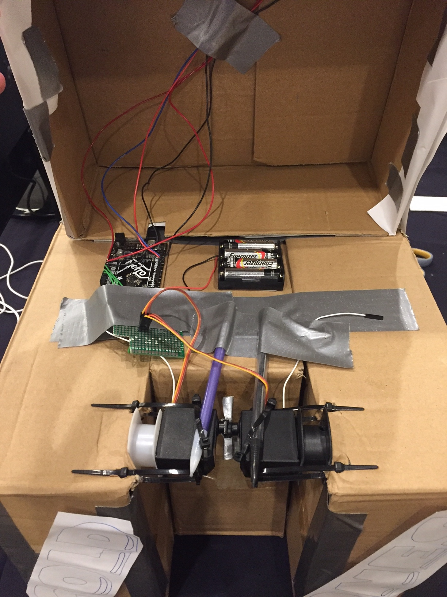

Built for Captial One's Carbon Hackathon, the Cold One Cracker was an overall finalist and winner of crowd favorite. The can opener's suite of features includes:
• Facial recognition for authorization
• Daily drink counter per individual
• Simple user interface
• Dual servo controlled opener
• Two seven segment displays for drink count
• Robust structure made of cardboard, pencils, duct tape, and zip ties

To operate the Cold One Cracker, first insert your beverage. Then it scans your face and checks against our face database to see if you're authorized. Once you're recognized, it opens the can and updates your drink count and displays it on the 7 segment displays. Our teaser trailer is below.
*** WARNING: LOUD VIDEO ***
Being the only person in the group with hardware experience, I was in charge of the cracking mechanism, seven segment displays, and communication between the Arduino and laptop. Besides the displays and servos, the hardware components at the hackathon were pretty lacking. Thankfully I had my box of components with me so we could drive the displays with some shift registers and provide more power to the servos using an external battery pack.

In this look "under the hood" you can see how we had to use pencils to stop the servos from turning under load. Given we only had access to boxes for structural materials, we had to use empty wire spools to help the servos bridge the gap where the can is inserted. In the back you can see the data wires running up to the displays which are integrated into the hood.